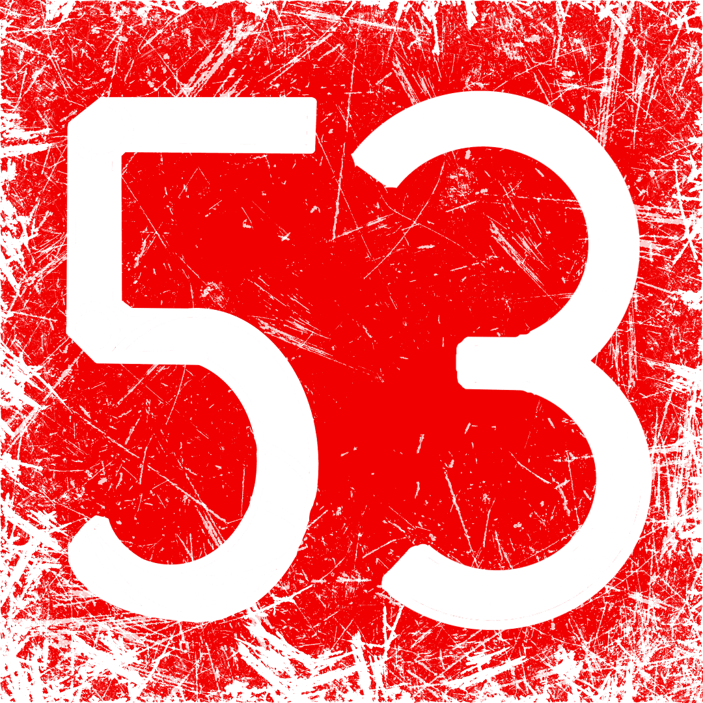
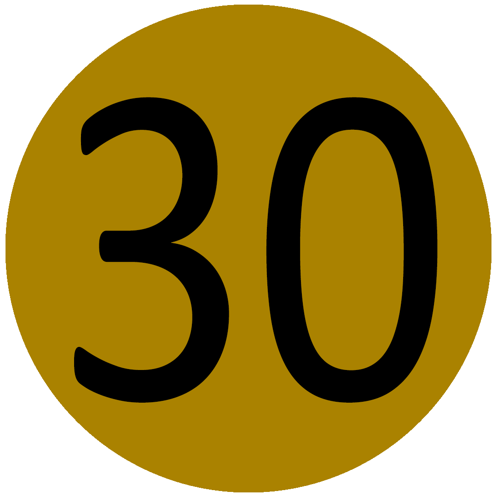
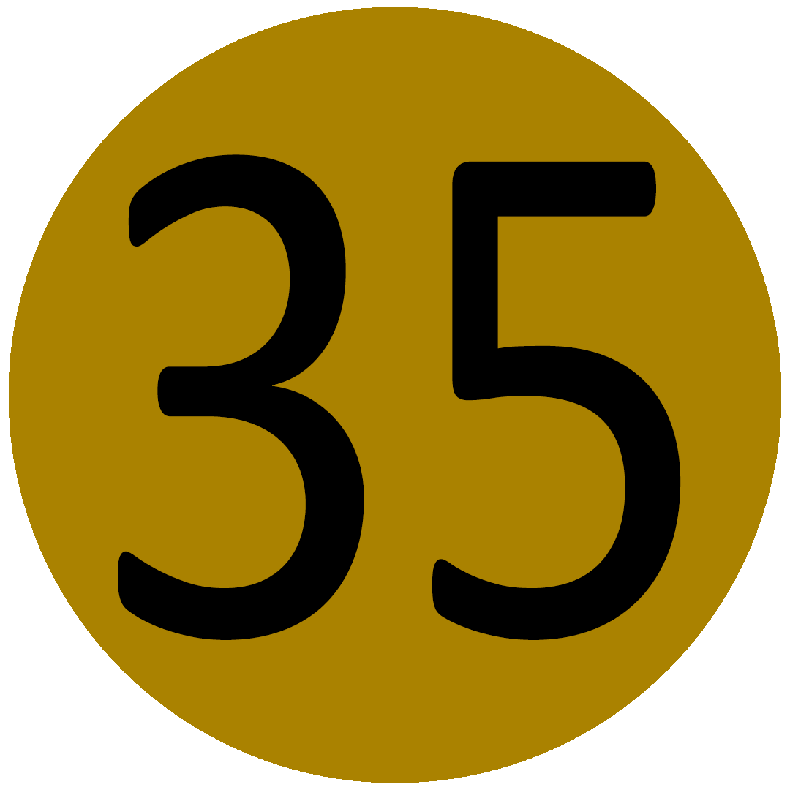
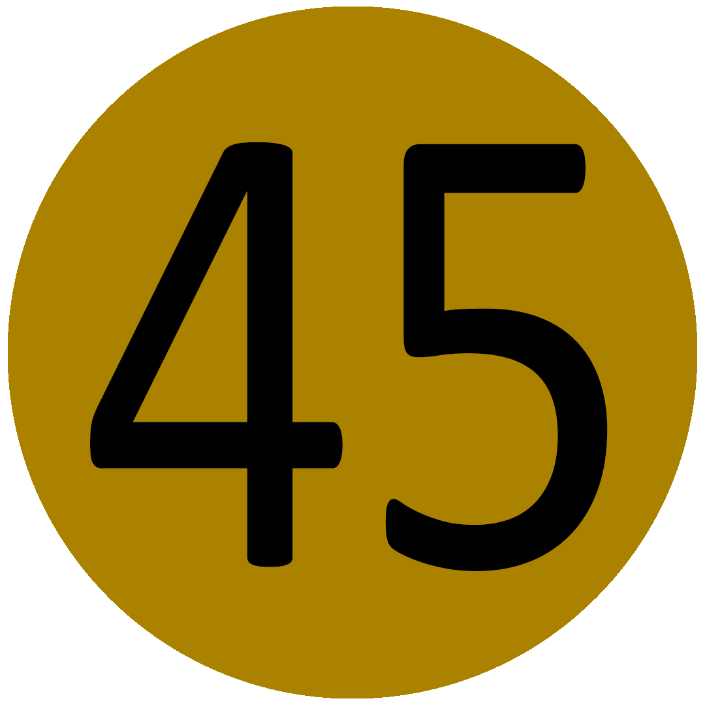

Number Decals
Perfect for adding numerical markings to your vehicles.
TO USE A DECAL: copy the decal's URL, select a decal in Sprocket Tank Design, and paste the link into the URL field.

DINBW-
https://sprockettools.github.io/numbers/DINBW-.png

DINBW0
https://sprockettools.github.io/numbers/DINBW0.png

DINBW1
https://sprockettools.github.io/numbers/DINBW1.png

DINBW2
https://sprockettools.github.io/numbers/DINBW2.png

DINBW3
https://sprockettools.github.io/numbers/DINBW3.png

DINBW4
https://sprockettools.github.io/numbers/DINBW4.png

DINBW5
https://sprockettools.github.io/numbers/DINBW5.png

DINBW6
https://sprockettools.github.io/numbers/DINBW6.png

DINBW7
https://sprockettools.github.io/numbers/DINBW7.png

DINBW8
https://sprockettools.github.io/numbers/DINBW8.png

DINBW9
https://sprockettools.github.io/numbers/DINBW9.png

DINOlive-
https://sprockettools.github.io/numbers/DINOlive-.png

DINOlive0
https://sprockettools.github.io/numbers/DINOlive0.png

DINOlive1
https://sprockettools.github.io/numbers/DINOlive1.png

DINOlive2
https://sprockettools.github.io/numbers/DINOlive2.png

DINOlive3
https://sprockettools.github.io/numbers/DINOlive3.png

DINOlive4
https://sprockettools.github.io/numbers/DINOlive4.png

DINOlive5
https://sprockettools.github.io/numbers/DINOlive5.png

DINOlive6
https://sprockettools.github.io/numbers/DINOlive6.png

DINOlive7
https://sprockettools.github.io/numbers/DINOlive7.png

DINOlive8
https://sprockettools.github.io/numbers/DINOlive8.png

DINOlive9
https://sprockettools.github.io/numbers/DINOlive9.png

DINRed-
https://sprockettools.github.io/numbers/DINRed-.png

DINRed0
https://sprockettools.github.io/numbers/DINRed0.png

DINRed1
https://sprockettools.github.io/numbers/DINRed1.png

DINRed2
https://sprockettools.github.io/numbers/DINRed2.png

DINRed3
https://sprockettools.github.io/numbers/DINRed3.png

DINRed4
https://sprockettools.github.io/numbers/DINRed4.png

DINRed5
https://sprockettools.github.io/numbers/DINRed5.png

DINRed6
https://sprockettools.github.io/numbers/DINRed6.png

DINRed7
https://sprockettools.github.io/numbers/DINRed7.png

DINRed8
https://sprockettools.github.io/numbers/DINRed8.png

DINRed9
https://sprockettools.github.io/numbers/DINRed9.png

DINWhiteO-
https://sprockettools.github.io/numbers/DINWhiteO-.png

DINWhiteO0
https://sprockettools.github.io/numbers/DINWhiteO0.png

DINWhiteO1
https://sprockettools.github.io/numbers/DINWhiteO1.png

DINWhiteO2
https://sprockettools.github.io/numbers/DINWhiteO2.png

DINWhiteO3
https://sprockettools.github.io/numbers/DINWhiteO3.png

DINWhiteO4
https://sprockettools.github.io/numbers/DINWhiteO4.png

DINWhiteO5
https://sprockettools.github.io/numbers/DINWhiteO5.png

DINWhiteO6
https://sprockettools.github.io/numbers/DINWhiteO6.png

DINWhiteO7
https://sprockettools.github.io/numbers/DINWhiteO7.png

DINWhiteO8
https://sprockettools.github.io/numbers/DINWhiteO8.png

DINWhiteO9
https://sprockettools.github.io/numbers/DINWhiteO9.png

DINWhite-
https://sprockettools.github.io/numbers/DINWhite-.png

DINWhite0
https://sprockettools.github.io/numbers/DINWhite0.png

DINWhite1
https://sprockettools.github.io/numbers/DINWhite1.png

DINWhite2
https://sprockettools.github.io/numbers/DINWhite2.png

DINWhite3
https://sprockettools.github.io/numbers/DINWhite3.png

DINWhite4
https://sprockettools.github.io/numbers/DINWhite4.png

DINWhite5
https://sprockettools.github.io/numbers/DINWhite5.png

DINWhite6
https://sprockettools.github.io/numbers/DINWhite6.png

DINWhite7
https://sprockettools.github.io/numbers/DINWhite7.png

DINWhite8
https://sprockettools.github.io/numbers/DINWhite8.png

DINWhite9
https://sprockettools.github.io/numbers/DINWhite9.png
-
50AoS
https://sprockettools.github.io/numbers/50AoS.png

51AoS
https://sprockettools.github.io/numbers/51AoS.png

52AoS
https://sprockettools.github.io/numbers/52AoS.png
- 
53AoS
https://sprockettools.github.io/numbers/53AoS.png
-
54AoS
https://sprockettools.github.io/numbers/54AoS.png
-
solid 0
https://sprockettools.github.io/numbers/solid_0.png

solid 1
https://sprockettools.github.io/numbers/solid_1.png

solid 2
https://sprockettools.github.io/numbers/solid_2.png
-
solid 3
https://sprockettools.github.io/numbers/solid_3.png
-
solid 4
https://sprockettools.github.io/numbers/solid_4.png

solid 5
https://sprockettools.github.io/numbers/solid_5.png
-
solid 6
https://sprockettools.github.io/numbers/solid_6.png
-
solid 7
https://sprockettools.github.io/numbers/solid_7.png

solid 8
https://sprockettools.github.io/numbers/solid_8.png
-
solid 9
https://sprockettools.github.io/numbers/solid_9.png

stencil 0
https://sprockettools.github.io/numbers/stencil_0.png
-
stencil 1
https://sprockettools.github.io/numbers/stencil_1.png

stencil 2
https://sprockettools.github.io/numbers/stencil_2.png
-
stencil 3
https://sprockettools.github.io/numbers/stencil_3.png
-
stencil 4
https://sprockettools.github.io/numbers/stencil_4.png

stencil 5
https://sprockettools.github.io/numbers/stencil_5.png

stencil 6
https://sprockettools.github.io/numbers/stencil_6.png
-
stencil 7
https://sprockettools.github.io/numbers/stencil_7.png
-
stencil 9
https://sprockettools.github.io/numbers/stencil_9.png
-
t10
https://sprockettools.github.io/numbers/t10.png
-
t100
https://sprockettools.github.io/numbers/t100.png
-
t15
https://sprockettools.github.io/numbers/t15.png
-
t20
https://sprockettools.github.io/numbers/t20.png
-
t22
https://sprockettools.github.io/numbers/t22.png
-
t25
https://sprockettools.github.io/numbers/t25.png
-
t28
https://sprockettools.github.io/numbers/t28.png
- 
t30
https://sprockettools.github.io/numbers/t30.png
- 
t35
https://sprockettools.github.io/numbers/t35.png
-
t40
https://sprockettools.github.io/numbers/t40.png
-
t43
https://sprockettools.github.io/numbers/t43.png
- 
t45
https://sprockettools.github.io/numbers/t45.png
-
t5
https://sprockettools.github.io/numbers/t5.png
-
t50
https://sprockettools.github.io/numbers/t50.png
-
t55
https://sprockettools.github.io/numbers/t55.png
-
t60
https://sprockettools.github.io/numbers/t60.png
-
t65
https://sprockettools.github.io/numbers/t65.png

t70
https://sprockettools.github.io/numbers/t70.png
-
t75
https://sprockettools.github.io/numbers/t75.png
-
t80
https://sprockettools.github.io/numbers/t80.png
-
t85
https://sprockettools.github.io/numbers/t85.png
-
t90
https://sprockettools.github.io/numbers/t90.png

t95
https://sprockettools.github.io/numbers/t95.png